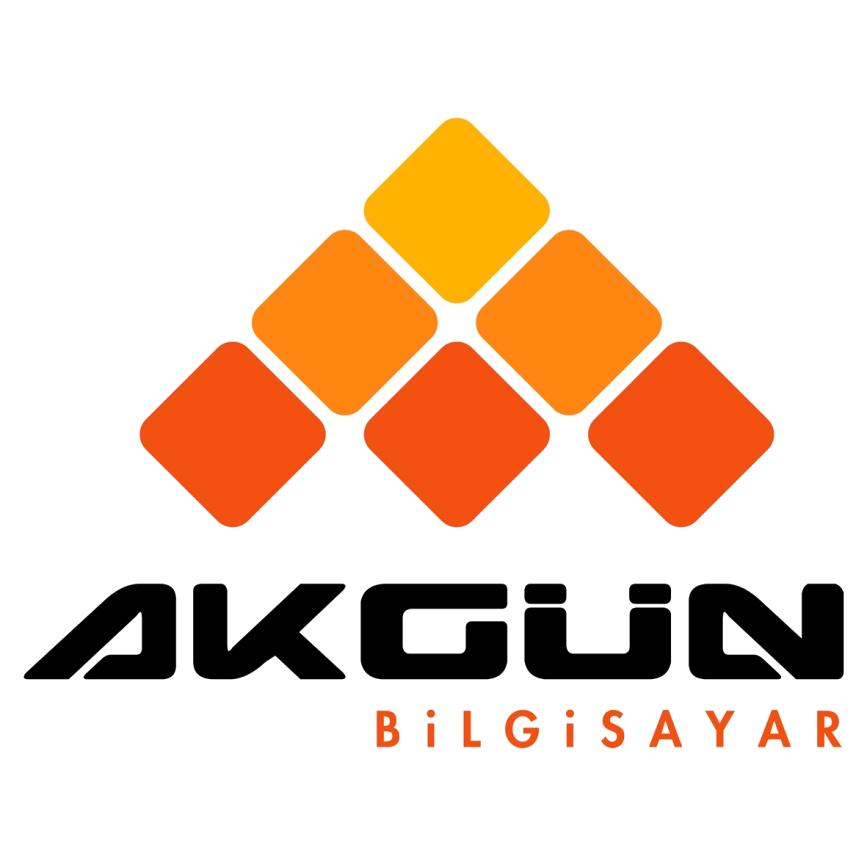
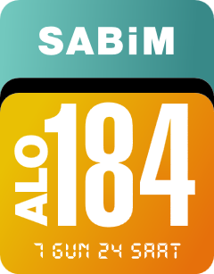
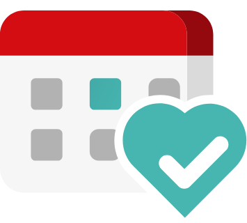

DYS
Doküman Yönetim Sistemi
EKİP
Personel İşlemleri
Sağlık E-Posta
Sağlık E-Posta Sistemi

AKGÜN İKBS
İnsan Kaynakları Bilgi Sistemi
AKGÜN HBYS
Hastane Bilgi Yönetim Sistemi
CİMER
Cumhurbaşkanlığı İletişim Merkezi başvuru takip sistemi

SABİM
Sağlık Bakanlığı İletişim Merkezi başvuru takip sistemi
Açık Kapı
Açık Kapı başvuru takip sistemi

MHRS Kurum
Randevu Yönetimi
KPS Yönetim
Sağlık Bakanlığı Kimlik Paylaşım Sistemi
ÖBS
Ölüm Bildirim Sistemi
Ölüm Belgesi Doğrulama
Ölüm Belgesi Doğrulama
İSG-KATİP
İş Sağlığı ve Güvenliği Kayıt, Takip ve Analiz Programı
HİTAP
Hizmet Takip Programı
SGK Tescil
Sigortalı İşe Giriş ve İşten Ayrılış Bildirgeleri
E-İmza Başvuru
Kamu SM Sağlık Bakanlığı E-imza Başvuru Portalı
Vizite Bildirim
Çalışılmadığına Dair Bildirim Giriş Sistemi
Yazılım Destek
Sağlık Bakanlığı Yardım Masası
e-Nabız Yönetim
e-Nabız Yönetim
E-Devlet
e-Devlet Kapısı Devletin Kısayolu
PAGO
Personel Bilgi Yönetim Sistemi
EHİP
Tıbbi Cihaz Takibi
Eğitim İstatistik Sistemi
Eğitim İstatistik Sistemi
Web Sitesi
Sağlık Bakanlığı Web İçerik Yönetimi
Tarım Bulut
Su Verimliliği Raporu Gönder